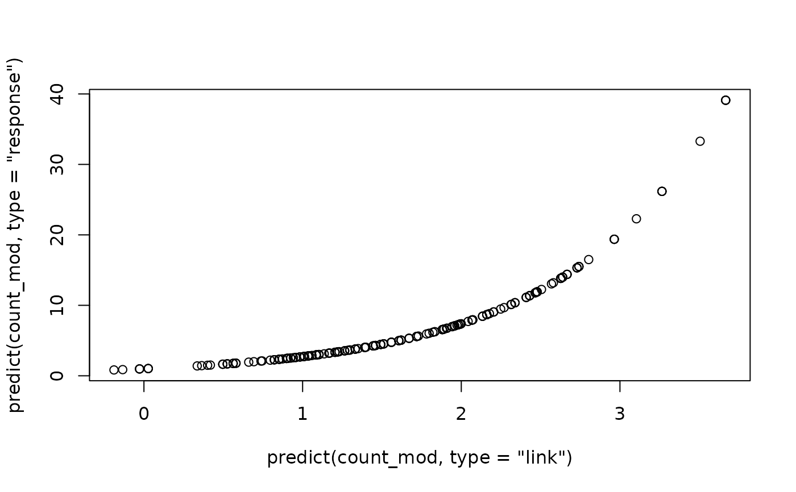
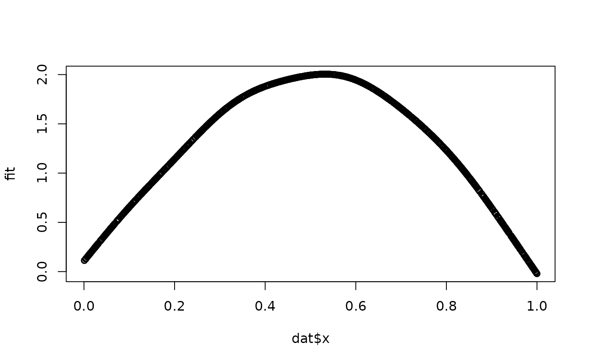

Predictions are given at the population level, i.e., with random
effects set to zero. For fitted models including random effects, see
fitted.galamm. For mixed response models, only predictions on
the scale of the linear predictors is supported.
Arguments
- object
An object of class
galammreturned fromgalamm.- newdata
Data from for which to evaluate predictions, in a
data.frame. Defaults to "NULL", which means that the predictions are evaluate at the data used to fit the model.- type
Character argument specifying the type of prediction object to be returned. Case sensitive.
- ...
Optional arguments passed on to other methods. Currently used for models with smooth terms, for which these arguments are forwarded to
mgcv::predict.gam.
See also
fitted.galamm() for model fits, residuals.galamm() for
residuals, and predict() for the generic function.
Other details of model fit:
VarCorr,
appraise.galamm(),
coef.galamm(),
confint.galamm(),
derivatives.galamm(),
deviance.galamm(),
factor_loadings.galamm(),
family.galamm(),
fitted.galamm(),
fixef,
formula.galamm(),
llikAIC(),
logLik.galamm(),
model.frame.galamm(),
nobs.galamm(),
print.VarCorr.galamm(),
ranef.galamm(),
residuals.galamm(),
response(),
sigma.galamm(),
vcov.galamm()
Examples
# Poisson GLMM
count_mod <- galamm(
formula = y ~ lbas * treat + lage + v4 + (1 | subj),
data = epilep, family = poisson
)
# Plot response versus link:
plot(
predict(count_mod, type = "link"),
predict(count_mod, type = "response")
)

# Predict on a new dataset
nd <- data.frame(lbas = c(.3, .2), treat = c(0, 1), lage = 0.2, v4 = -.2)
predict(count_mod, newdata = nd)
#> [,1]
#> 1 2.188055
#> 2 1.832320
predict(count_mod, newdata = nd, type = "response")
#> [,1]
#> 1 8.917850
#> 2 6.248365
# Semiparametric model
dat <- subset(cognition, domain == 1 & item == "11")
dat$y <- dat$y[, 1]
mod <- galamm(y ~ s(x) + (1 | id), data = dat)
# Get the linear predictor matrix
Xp <- predict(mod, type = "lpmatrix")
# Compute the estimated smooth function
# See the vignette on posterior sampling for details
betas <- coef(mod$gam)
fit <- Xp %*% betas
plot(dat$x, fit)
